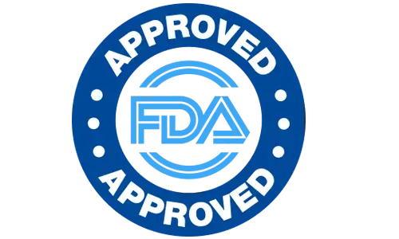

Why Choose Sugar Reset
Made In An FDA-Registered, cGMP US Facility
See the full ingredient breakdown for exactly what's inside.

Made In USA
Manufactured domestically.

cGMP Certified
Manufacturing standard followed.

Non-GMO Formula
Vegetarian, dairy free, gluten free.

FDA-Registered Facility
Facility follows applicable guidelines.

60-Day Guarantee
Full refund window on every order.